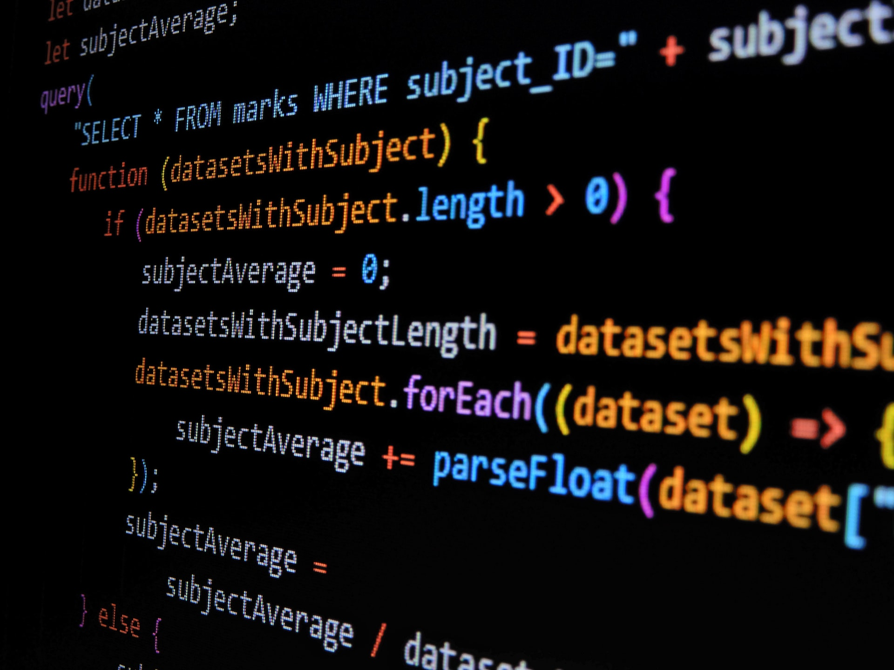

JavaScript이란 무엇인가?
JavaScript란? Ecma International의 프로토타입 기반의 프로그래밍 언어로, 스크립트 언어에 해당된다. 특수한 목적이 아닌 이상 모든 웹 브라우저에 인터프리터가 내장되어 있다. 오늘날 HTML, CSS와 함께 웹을 구성하는 요소 중 하나다. HTML이 웹 페이지의 기본 구조를 담당하고, CSS가 디자인을 담당한다면 JavaScript는 클라이언트 단에서 웹 페이지가 동작하는 것을 담당한다.[1] 웹 페이지를 자동차에 비유하자면, HTML은 자동차의 뼈대, CSS는 자동차의 외관, JavaScript는 자동차의 동력이라고 볼 수 있다. 썬 마이크로시스템즈(현재 오라클)에서 개발한 Java와는 별 관계가 없는 언어이다. 이름이 비슷하다고 같은 언어가 아니다. 사람들이 흔히 헷갈리는 부분 중 하나라 Java의 소유자인 오라클에서도 아니라고 강조한다.[2] 실질적인 구동 방식도 Java Virtual Machine을 이용해서 돌리는 Java와, 브라우저 내에 스크립트 엔진(인터프리터)이 존재하는 JavaScript는 완전히 다르다. 
1.여는 태그(Opening tag): 이것은 요소의 이름과(이 경우 p), 열고 닫는 꺽쇠 괄호로 구성됩니다. 요소가 시작(이 경우 단락의 시작 부분)부터 효과가 적용되기 시작합니다. 2.닫는 태그(Closing tag): 이것은 요소의 이름 앞에 슬래시(/)가 있는것을 제외하면 여는 태그(opening tag)와 같습니다. 이것은 요소의 끝(이 경우 단락의 끝 부분)에 위치합니다. 닫는 태그를 적어주지 않는 것은 흔한 초심자의 오류이며, 이것은 이상한 결과를 낳게됩니다. 3.내용(Content): 요소의 내용이며, 이 경우 단순한 텍스트이다. 4.요소(Element): 여는 태그, 닫는 태그, 내용을 통틀어 요소(element)라고한다.